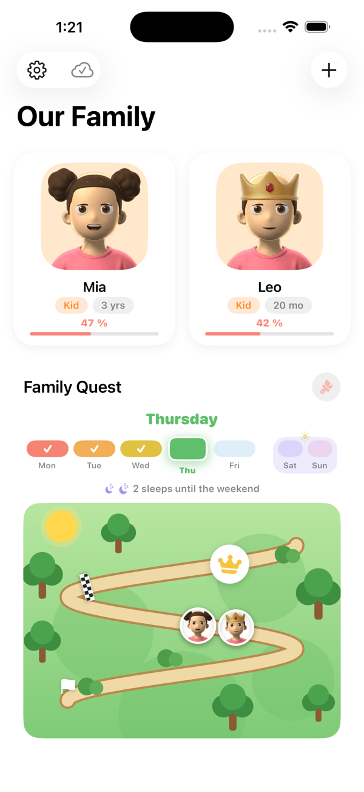
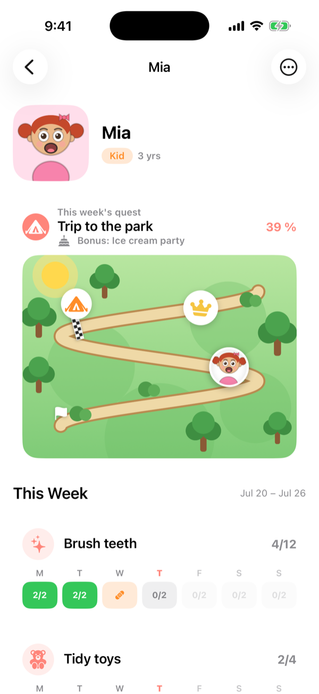
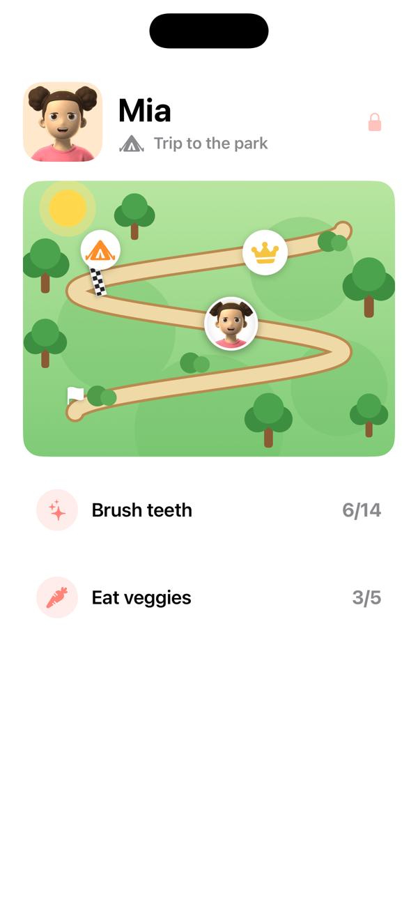
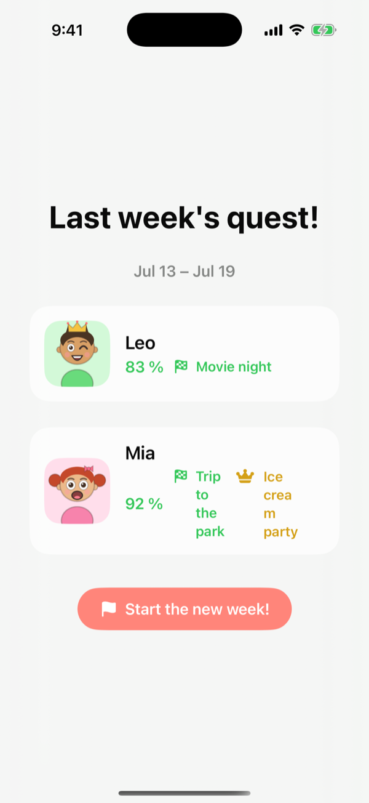
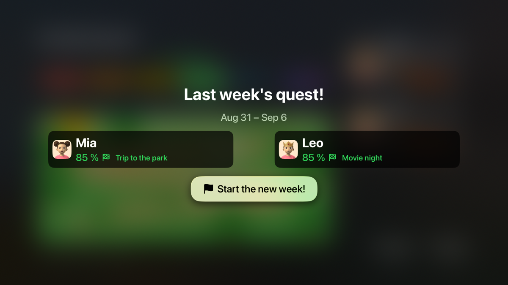
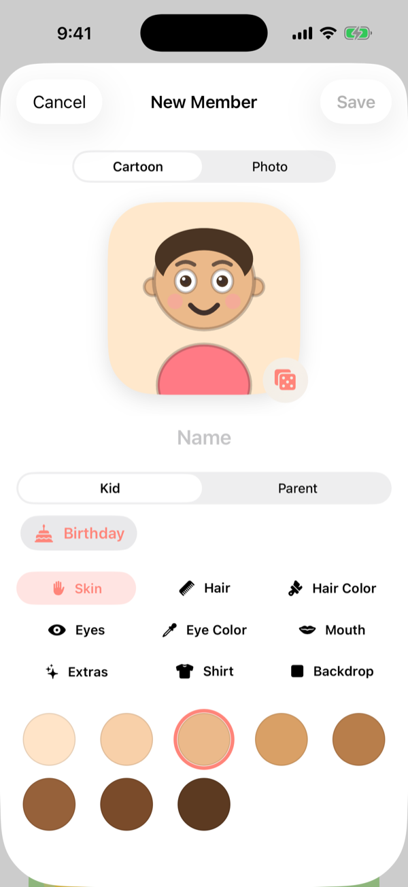
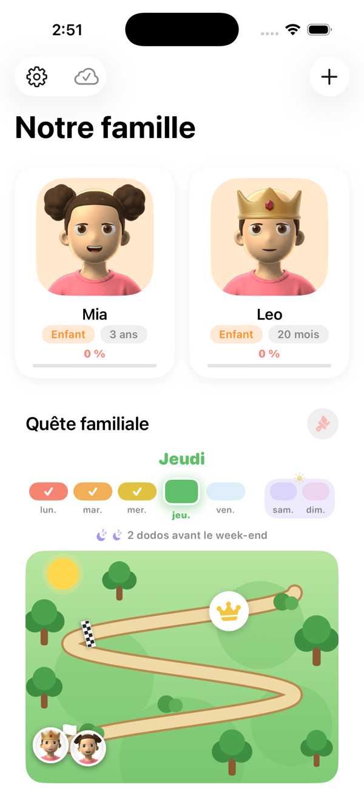

See how it works
The whole app, screen by screen. Nothing here is a mock-up — these are real screens with a real week in them.
A minute on an iPhone: a child's week, ticking today off, and the goal library.

Everyone on one screen
Each child has a cartoon avatar and a percentage for the week. Below them, the shared Family Quest map — where the whole family is, together.
The week runs Monday to Sunday and the strip shows which days are already logged, so you can see at a glance whether yesterday got missed.

One child, one map
The avatar moves along the map as goals are ticked off. The tent is the finish line — the reward they chose — and the crown further along is the bonus for going past it.
Under the map, one row per goal and one square per day. "2/2" means brushing teeth twice that day. Tap a square to log it.

Kid Mode
A bigger, simpler version a child can drive themselves, without being able to reach anything they shouldn't. Handing the phone over is the point.
Everything that changes settings sits behind a grown-up question, so a four-year-old can tick their own goals without deleting anything.

Sunday counts up
When the week closes, the result is frozen and kept: what each child earned, whether they reached their reward, and whether they took the crown.
Frozen means frozen. Changing goals later never rewrites a week a child already finished — a good week stays a good week.

And the same thing on the television
This is the part almost no other chore app does. On Apple TV or Fire TV the whole family's week is on the screen everyone already gathers around, and goals can be ticked off with the remote.
A chart on a parent's phone is in the one place a four-year-old never looks. That is the reason this app exists at all.

Including Sunday night
The week's results land on the TV too, which turns a number into something the family watches together.

They make their own character
Skin, hair, eyes, mouth, shirt — or a photo instead, if they'd rather see themselves on the map.

English and French
The whole app, in both, including on the television. Set it once for the family and every device follows.
Canadian French, not a machine translation of the English.
Free. No ads, no subscription, no in-app purchases, and nothing tracked.